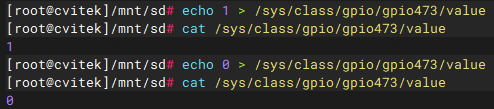

12. CVI PINMUX Operation Guide¶
This documentDescriptionin CV184x on the platformIf ConfigurationPin Multiplexing（Pinmux）：U-Boot ConfigurationMethod、KernelunderUse cvi_pinmux Tools，withand ephy PinSwitch to GPIO/SPI ofExample。
12.1. Preparation¶
Use SDK Providekernel；IfneedinSystem afterUse
cvi_pinmuxTools，needin SDK BuildbeforeThrough menuconfig Pinmux RelatedOption，BuildandBurningafter caninTerminalor SSH underExecutecvi_pinmux。
12.2. Operation Flow¶
12.2.1. U-Boot under Pinmux Configuration¶
U-Boot stageof pinmux inSource CodeFile u-boot-2021.10/board/cvitek/cv184x/board.c inThroughMacroConfiguration，for example：
#define PINMUX_CONFIG(PIN_NAME, FUNC_NAME) \
mmio_clrsetbits_32(PINMUX_BASE + FMUX_GPIO_FUNCSEL_##PIN_NAME, \
FMUX_GPIO_FUNCSEL_##PIN_NAME##_MASK << FMUX_GPIO_FUNCSEL_##PIN_NAME##_OFFSET, \
PIN_NAME##__##FUNC_NAME)
：
PIN_NAME：Pin ，and pinlist in Signal Name 。
FUNC_NAME：Function ，and pinlist in toofFunction（Function ） 。
Example：will UART2 of TX/RX Pin Configurationis UART4 of TX/RX Function，in board.c inAdd：
PINMUX_CONFIG(UART2_TX, UART4_TX);
PINMUX_CONFIG(UART2_RX, UART4_RX);
PinSupport FUNC_NAME，can pinlist in Signal Name of Function 。
12.2.2. Kernelunder Pinmux Configuration（cvi_pinmux Tools）¶
Tools ：in SDK inExecute menuconfig，Searchand pinmux RelatedOptionafterRebuild、Burning；System afterinTerminalor SSH in canUse cvi_pinmux。
CommandsDescription：Execute cvi_pinmux -h canView 。CommonCommandsas follows：
cvi_pinmux -p # Pin
cvi_pinmux -l # Pinand beforeFunction
cvi_pinmux -r pin # Read Pinof beforeFunction
cvi_pinmux -w pin/func # willPinSettingsis Function
Example：will UART2 of TX、RX is UART4 of TX、RX：
cvi_pinmux -w UART2_TX/UART4_TX
cvi_pinmux -w UART2_RX/UART4_RX
Outputin Pin 、 Function、RegisterAddressandWriteValue。canThrough cvi_pinmux -l View SoC on PinandOptionalFunction，orThrough cvi_pinmux -r pin_name View Pin beforeFunctionandOptionalFunction。
12.3. ephy Switch Pins to GPIO or SPI¶
followingwith ephy RelatedPinas an example，DescriptionIf will Switch to GPIO or SPI Functionand Verification。
12.3.1. Switch to GPIO¶
Steps 1：ThroughRegister GPIO Function
devmem 0x03009804 32 0x1
devmem 0x0300907C 32 0x0500
devmem 0x03009078 32 0x1000
devmem 0x03009050 32 0x4000
devmem 0x0300907C 32 0x0
devmem 0x03009804 32 0x0
devmem 0x03009804 32 0x1
devmem 0x03009808 32 0x181
devmem 0x03009800 32 0x0905
devmem 0x0300907c 32 0x0500
devmem 0x03009078 32 0x1f00
devmem 0x03009074 32 0x606
devmem 0x03009070 32 0x606
Steps 2： cvi_pinmux willPin is GPIO（with PAD_ETH_TXP as an example）
cvi_pinmux -r PAD_ETH_TXP
cvi_pinmux -w PAD_ETH_TXP/XGPIOB_25

Steps 3：Verification GPIO Output
GPIOB is 448，PAD_ETH_TXP XGPIOB_25， GPIO is 448 + 25 = 473。in sysfs inExportand / ， ：
echo 473 > /sys/class/gpio/export
echo out > /sys/class/gpio/gpio473/direction
echo 1 > /sys/class/gpio/gpio473/value
cat /sys/class/gpio/gpio473/value
echo 0 > /sys/class/gpio/gpio473/value
cat /sys/class/gpio/gpio473/value
{kind=link}

12.3.2. Switch to SPI¶
with PAD_ETH_TXP、PAD_ETH_TXM as an example，willPin to SPI1 of SDO、SDI after，can Loopback Test。
Steps 1：willPinConfigurationis SPI1 Function
cvi_pinmux -r PAD_ETH_TXM
cvi_pinmux -w PAD_ETH_TXM/SPI1_SDI
cvi_pinmux -r PAD_ETH_TXP
cvi_pinmux -w PAD_ETH_TXP/SPI1_SDO
Steps 2： SPI of MOSI and MISO， Loopback Test
If data.bin and data_out.bin ， Description SPI ：
dd if=/dev/urandom of=data.bin bs=2k count=1
./spidev_test -D /dev/spidev1.0 -s 10000000 -i data.bin -o data_out.bin
diff data.bin data_out.bin